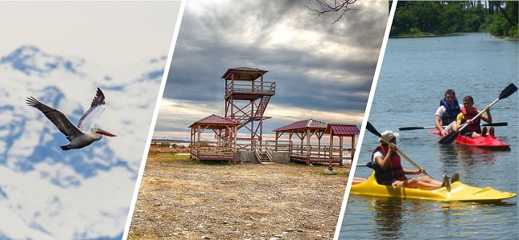

get to know georgia
კოლხეთის ეროვნული პარკი — ეროვნული პარკი საქართველოში, შავი ზღვის სანაპიროზე, პალიასტომის ტბის მიდამოებში. კოლხეთის დაცული ტერიტორიების ნაწილი. ფართობი 44 980 ჰა, საიდანაც 29 229 ჰა სახმელეთო ფართობია, 15 751 ჰა კი — შავი ზღვის აკვატორია.[1] დაარსდა 1999 წელს. მოიცავს შავი ზღვის აღმოსავლეთ სანაპიროზე ნაბადისა და ჭურიის უბნის მიმდებარე აკვატორიის ნაწილს და პალიასტომის ტბის აუზს. პარკი კოლხეთის საერთაშორისო მნიშვნელობის მქონე ჭარბტენიანი ეკოსისტემების დაცვისა და შენარჩუნების მიზნითაა შექმნილი. გამოირჩევა ველური ფლორისა და ფაუნის მაღალი ბიომრავალფეროვნებით, ენდემური და რელიქტური სახეობების სიუხვით. აქ წარმოდგენილია სხვადასხვა ტიპის ლანდშაფტები, ცალკეული ეკოსისტემები და ცენოზები.[2]
ეროვნული პარკი მოიცავს 5 მუნიციპალიტეტის ტერიტორიას — ზუგდიდის, ხობის, სენაკის, აბაშისა და ლანჩხუთის — და საქართველოს ორი ისტორიული მხარის — სამეგრელოსა და გურიის ნაწილია.[2] ეროვნული პარკი მნიშვნელოვანია როგორც მიგრირებად, მიმომფრენ და წყალმცურავ ფრინველთა საბინადროდ ვარგისი არეალი,[2] ასევე როგორც შავი ზღვის ზუთხისებრთა ოჯახის თევზების ტოფობის ორიდან ერთ-ერთი ადგილი (მდ. რიონის შესართავის 9 კმ-იანი მონაკვეთი; მეორე — დუნაი).[3]
1935 წელს შეიქმნა კოლხეთის ნაკრძალი (ფართობი 561 ჰა). მისი მიზანი იყო კოლხეთის დაბლობისათვის დამახასიათებელი რელიქტური ფლორისა და ფაუნის მთლიანი კომპლექსის დაცვა. ნაკრძალს დიდი სამეცნიერო-კვლევითი და ისტორიული მნიშვნელობა ჰქონდა.[4] ეროვნული პარკი დაარსდა 1999 წელს.
შემონახულია კოლხეთისათვის დამახასიათებელი ჭაობისა და დაბლობის ტყეების ლანდშაფტი. გავრცელებულია მურყანი, წიფელი, რცხილა, კოლხური სურო, წყავი, შქერი და რელიქტური ბალახოვანი მცენარეები. ცხოველებიდან — შველი, გარეული ღორი და სხვა.[4]
2007 წლის 24 ოქტომბრიდან კოლხეთის ეკოსისტემა შეტანილი იყო იუნესკოს მსოფლიო მემკვიდრეობის საცდელ სიაში.[5] 2021 წელს კოლხეთის ტროპიკული ტყეები და ჭაობები, რომელიც კოლხეთის ეროვნული პარკის ტერიტორიასაც მოიცავს, იუნესკოს მსოფლიო მემკვიდრეობის ძეგლთა სიაში შევიდა.
